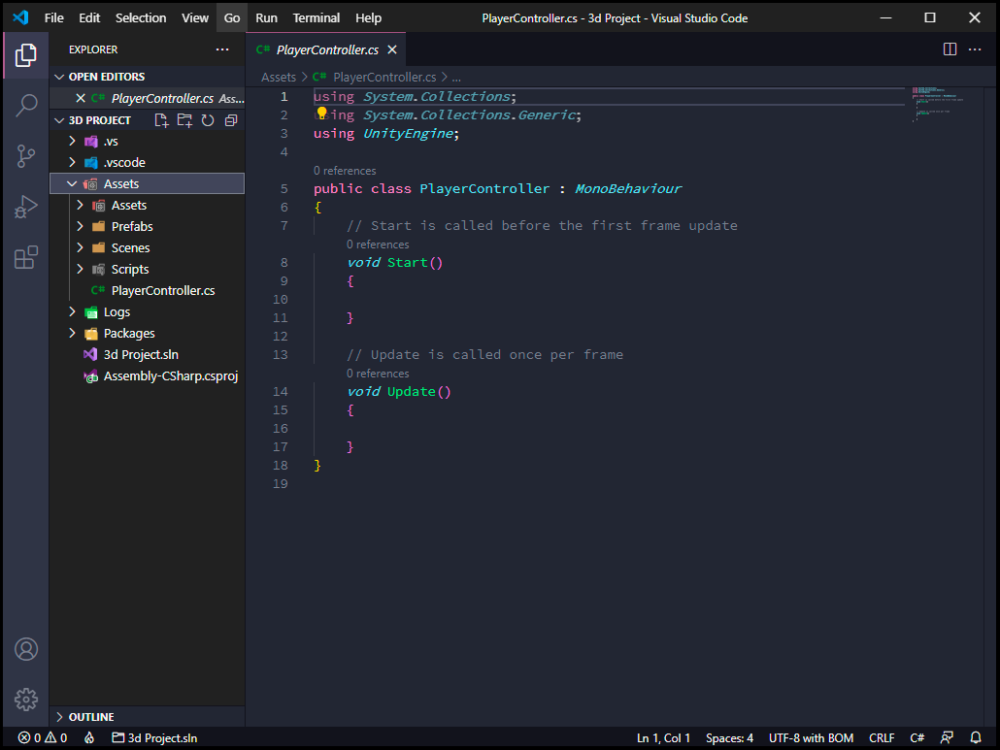
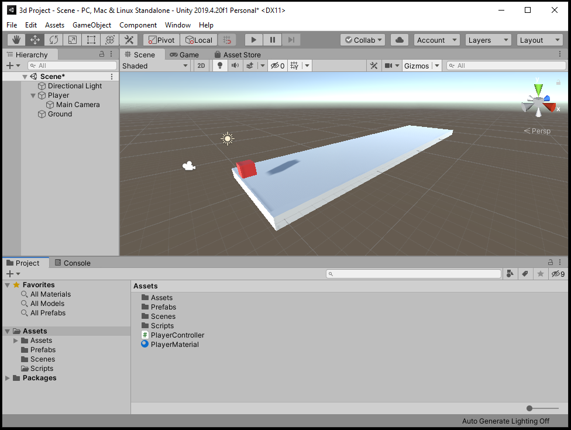

Agora que nos sabemos como usar e navegar pelo Editor Unity podemos nos aprofundar na parte de programação, e para fazer da maneira correta, vamos começar aprendendo como criar, modificar e adicionar Scripts a objetos, como utilizar alguma das implementações mais importantes da API, como "Game Object" e Quaternions, e por fim, como criar e utilizar "Scriptable Objects".
Antes de começarmos é altamente recomendável você ter o manual da API Unity aberto em mãos, ou que apenas de uma olhada, ele é bem escrito e informativo por si mesmo, cheio de exemplos e implementações.
Trabalhando com Scripts
Muito bem, com o editor aberto, aperte o botão direito do mouse dentro da janela do project e selecione "C# Script" na seção de "Create" [Create>C#Script] e o nomeie "PlayerController"(é importante lembrar que quando estamos criando um script, estamos basicamente criando uma nova classe e não podendo colocar um espaço entre as palavras), assim criando um novo componente que executara o código contido dentro quando um objeto estiver sendo simulado, nesse caso o objeto sendo o nosso player, e o código fazendo ele andar quando nos pressionarmos alguma tecla.
Quando criamos um Script na Unity, por padrão ele é designado como "MonoBehaviour", que é um tipo de classe que esta implementada no source
code, por padrão é possível instanciar as funções da API dentro dela e pode ser utilizada para "quase" qualquer coisa.
Apos criar o Script crie um cubo 3D que será o nosso player, o nomeie "Player" e arraste o script recém criado para o cubo na janela Scene, ou
selecione o cubo, e na janela do Inspector, aperte o botão Add Component e digite o nome do script que você quer adicionar, nesse casso
"PlayerController".
Entendendo e Codificando na API
Agora estamos prontos para "colocar a mão na massa", para começar a programar, precisamos abrir o ambiente de desenvolvimento, aperte o botão direito na
janela do Project e selecione "Open C# Project".
Antes de prosseguirmos é bom notar que o ambiente de desenvolvimento que a maioria usa é o "Visual Studio", uma ferramenta da Microsoft
com parceria com a Unity, o intellisense(Auto completar) e outras mecânicas desse programa são muito bons, mas ele é surpreendentemente pesado e lento
comparado a outros programas que oferecem a mesma ou uma utilidade maior, por experiência eu recomendo uma ferramenta chamada
"Visual Studio Code", também feita pela Microsoft, uma ferramenta de desenvolvimento multi-linguagem mais leve e com mais utilidades e
opções de "add-ons" que o visual Studio padrão. Se você se interessar, de uma olhada
no site official para saber como o utilizar com a Unity.
Nesse tutorial eu estarei usando o Visual Studio Code.

Agora com o ambiente de programação aberto nos podemos notar duas coisas importantes, três linhas de códigos que estão importado "NameSpaces" e duas funções que foram automaticamente criadas junto com o arquivo, esses NameSpaces no começo são obrigatórios para usar as funções da Unity e as funções "Start" e "Update" são muito importante que você provavelmente vai usar na maioria dos ScriptsA Função "Start" executa todo o código dentro das chaves uma vez que o jogo começa e apenas quando ele começa, para executar um código quando um objeto é criado depois da inicialização do jogo, nos pode usar a função "Awake", que é um tipo de variação da função Start que executa o código quando é criado. A função "Update" executa todo o código dentro das chaves uma vez a cada frame, isso é executando um código milhares de vezes por segundo, isso pode pesar o jogo quando colocamos um algoritmo mais complicado ou que usa a física do jogo, nessas instancias nos usamos a função "Fixed Update", que é uma variação do próprio Update, sendo executada em um frequência fixa, de acordo com a maquina.
Nos vamos usar apenas a função Update para fazer o cubo se movimentar nos eixos x e z usando uma função da class Transform chamada
"Translate". A forma como o Transform movimenta um objeto no espaço é pegando o valor atual e somando ou substituindo por outro valor, oque o
método Translate faz é deixar mais fácil essa ação.
Para utilizar esse método, nos precisamos saber qual o Transform que vai ser utilizado, nesse caso, vai ser o Transform do objeto que esse script esta
ligado, para mencionar ele , nos usamos a variável local "transforme"(com T minúsculo), depois nos colocamos um ponto e a função
"Translate()". Para a função funcionar, nos precisamos dizer qual a direção em que ele vai se mover e para poder dizer qual a direção nos
usamos a classe Unity gerencia três valores(x, y, z), a classe Vector3 e acessando sua função que da uma direção: Vector3.foward,
Vector3.right, Vector3.up, etc...
Além da direção nos precisamos saber qual a velocidade, nos podemos apenas multiplicar um valor a metodo Vector3, mas lembre que isso será dentro da
função Update, como isso acontecera milhares de vezes por segundo, no precisamos normaliza-la de uma forma, e a maneira de fazer isso é multiplica-la pela
função “Time.deltaTime”, uma função que gera um numero de acordo com a velocidade da sua maquina.
Ate agora você dever ter algo assim:
transform.Translate(Vector3.forward * 5 * Time.deltaTime);
Essa implementação do código esta correta, mas tem um erro crucial, ele vai mover o cubo em uma direção fixa para sempre, para corrigir esse erro, nos podemos introduzir uma variável que vai receber um valor toda vez que nos apertarmos uma tecla, e se nos não apertarmos uma tecla, esse valor vai ficar em zero, assim movendo o cubo ou o deixando parado quando quisermos. Para a nossa felicidade a Unity tem uma implementação que recebe o input do teclado e gera um valor de 1 a -1 quando as teclas "W" e "S" ou "A" e "D" são pressionadas, essa função sendo:
"Input.GetAxis("Horizontal");" que gera o valor 1 quando "A" é pressionado, -1 quando "D" é pressionado e 0 quando inativo.
"Input.GetAxis("Vertical");" que gera o valor 1 quando "W" é pressionado, -1 quando "S" é pressionado e 0 quando inativo.
Para receber esses valores, vamos criar 2 variáveis do tipo float chamadas "inputH" e "inputV", formatando o código dessa maneira:
public float inputH, inputV; void Update() { inputH = Input.GetAxis("Horizontal"); inputV = Input.GetAxis("Vertical"); transform.Translate(Vector3.forward * Time.deltaTime * 5 * inputV); transform.Translate(Vector3.right * Time.deltaTime * 5 * inputH); }
Se você for ao editor, esperar o código compilar e apertar o botão de Play, ou usar o atalho [Control + P], ira conseguir mover o cubo nos eixos X e Z. Agora que nos sabemos como usar o Transforme para mover objetos, vamos nos aprofundar um pouco mais nas outras funções básicas da Unity e descobrir como mover um objeto com gravidade e colisão que consiga interagir com outros objetos.
Va na tela Scene e coloque dois componentes no cubo player: "RigidBody" e "BoxCollider", nos iremos usar o BoxCollider,
pois é mais apropriado para um objeto simples como o cubo, se fosse um modelo mais complexo nos poderíamos usar um "MeshCollider", que iria
criar uma face de colisão para cada face do modelo, imitando vértice por vértice.
Para simular a gravidade e colisões de objetos nos usamos em conjunção o componente RigidBody e os componentes do tipo "Collider", sem
falar das dependências um do outro, um objeto com apenas um RigidBody vai atravessar o mundo, pois não tem colisão, e um objeto apenas com algum Collider não
vai conseguir usar todas as funções de classe, pois vai ser considerado um objeto estático.

Se você apertar em play, vai perceber que o cubo começa a cair infinitamente, isso é obviamente porque não ha um chão debaixo dele, crie outro cubo 3D mas dessa vez o expanda para ficar do tamanho de uma avenida, coloque ele debaixo do Player e adicione um MeshCollider se um BoxCollider não for adicionado automaticamente.Para modificar o tamanho de um objeto você ira precisar usar o campo ou função "Scale" no componente Transform, para editar o tamanho sem precisar usar código, vá ao Inspetor e coloque os valores "10" e "40" nos campos "X" e "Z" do Scale no componente Transform.
Você pode arrastar a câmera para o objeto Player na janela Hierarchy para torna-la um filho do Player, e faze-la segui-lo automaticamente e adicionar uma material ao player para o diferenciar da plataforma.
Agora com uma plataforma para cubo andar em cima, nos podemos ver como ele interage com o chão e como ele cai das beiradas, mas nos ainda usamos o transform para movimentar o player, agora nos vamos trocar o método de movimento por um que use a física da unity e adicionar outros objetos, que quando nos tocarmos, eles serão destruídos assim:
Assim como no método do Transform, nos precisamos referenciar qual o componente que será usado para realizar a ação do movimento, neste caso como o RigidBody não é um componente padrão de todo os objetos, nos precisamos encontrar e guardar a referencia do componente em uma variável especifica. Existem duas maneiras para referenciar um objeto ou componente dentro de uma variável na unity, nos podemos criar uma variável publica no Scrip e arrastar o objeto da Scene ou o componente dentro inspetor para o espaço alocado no Script dentro do inspetor, ou a segunda maneira, que é o método mais eficiente que é usando para referenciar em tempo real quando o jogo esta rodando, o método "GetComponent<>()" o qual nos iremos usar.
A forma como método funciona é bem simples de entender, primeiramente nos precisamos de uma variável que vai receber o resultado, depois o sinal de igual,
depois a referencia do objeto que nos vamos procurar o componente, nesse caso vamos usar a variável "this", que referencia o propor objeto,
depois o método "GetComponent<TipoDeComponente>()", onde nos vamos colocar o tipo do componente dentro dos sinais de maior e menor,
nos podemos ate referenciar Scripts dessa maneira, pois eles são tratados como componentes.
Vamos criar uma variável publica do tipo Rigidbody com o nome rb, abreviando para ficar mais simples, e colocar o método dentro de um Awake.
O código deve ficar mais ou menos assim:
public Rigidbody rb; private void Awake() { rb = this.GetComponent<Rigidbody>(); }
Agora para fazer ele se movimentar nos vamos utilizar uma forma diferente para saber quando o usuário vai digitar uma tecla, invés de receber um valor, nos
vamos usar um If junto com um método chamado "Input.GetKey()". O método geralmente é usado em condições If else para saber se uma tecla
especifica foi pressionada, para usar o método nos colocamos a classe "Input", depois o método que queremos usar, nesse caso o método
"GetKey()" e dentro dos parênteses nos acessamos o "enum" de teclas "Keycode" e selecionamos a tecla
desejada ou uma variável do tipo "Keycode", assim possibilizando criar nossas próprias variáveis para colocar em um menu onde o player pode
escolher oque cada tecla faz.
Dentro de um FixedUpdate coloque um If com a condição "Input.GetKey(KeyCode.W)"
Agora nos vamos fazer o Player se movimentar usando um método que aplicando força em uma ou mais direções, o "addForce();" da classe RigidBody, para usar esse método basta apenas colocar qual componente será usado, a nome do método e em parênteses a força que será aplicada, mas vale lembrar que esse método tem varias sobrecargas, mas a que nos iremos usar é a que aplica força no eixo x, y e z. Valendo lembrar que colocando um valor negativo em um eixo vai o empurrar para trás.
A forma como iremos usar é mais ou menos assim:
private void FixedUpdate() { if (Input.GetKey(KeyCode.W)){ rb.AddForce(0 ,0 ,1000 * Time.deltaTime); } else if (Input.GetKey(KeyCode.S)){ rb.AddForce(0 ,0 , -1000 * Time.deltaTime); } }
Seguindo essa linha de raciocínio nos podemos adicionar também outro If Else para mover para a esquerda e direita.
Agora nos podemos prosseguir para a parte de colisões, crie outro cubo com uma colisão e física, de o nome de inimigo ou Enemy e use um material para dar outra
cor a ele, apos isso o coloque no meio ou final da plataforma.
Agora nos vamos ver outra mecânica útil da Unit, ela se chama "Tag", Tags são como adesivos que você pode colocar em um objeto, com o limite
de apenas uma tag, é útil para fazer checagens rápidas usando código, vá ao inspetor e olhe na parte superior em baixo do nome do objeto, na parte do tag crie e
adicione uma nova tag chamada "Enemy".
Para destruir o cubo inimigo nos vamos usar duas funções muito importantes, o "OnCollisionEnter()" que é um evento que executa o código toda vez que o objeto entra em colisão com outro objeto que possui um componente de colisão, por padrão essa função vem com o parâmetro "Collision other" que nos possibilita ter uma referia de com qual objeto foi colidido, e a função "Destroy()"" que como o nome indica, destrói o objeto que estiver dentro dos parênteses. Vamos usar o evento do OnCollisionEnter mais um If com a condição sendo que, se a tag do objeto tocado for igual a "Enemy", ele será destruído e para montar esse código é bem simples:
private void OnCollisionEnter(Collision other) { if(other.gameObject.CompareTag("Enemy")){ Destroy(other.gameObject); } }
Se você der Play você ira ver que toda vez que o player colide com o outro cubo ele é deletado, você pode invertendo o processo e invés do cubo inimigo ser
deletado, o player seja destruído, entender a plataforma e adicionar mais cubos, e o player comece a andar automaticamente, fazendo um mini game onde o jogador
deve desviar dos cubos na pista.
Programar na Unity é muito fácil e pratico, oque você viu nesse blog não é nem a ponta do iceberg, eu recomento você olhar o manual e pesquisar
frequentemente sobre a API, Unity Engine é uma ferramenta poderosa e eu recomendo para qualquer tipo de projeto.
Prossiga para a próxima e ultima pagina desse blog para aprender como usar a Asset Store, fazer a build de um projeto e como usar os microjogos da Unity